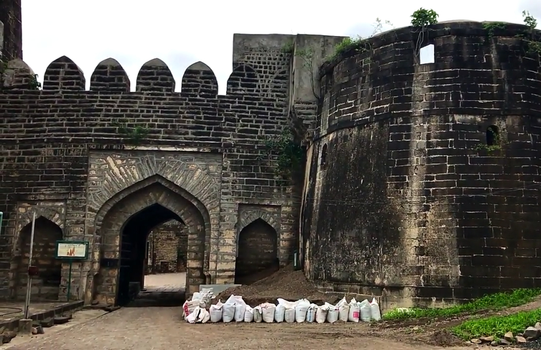
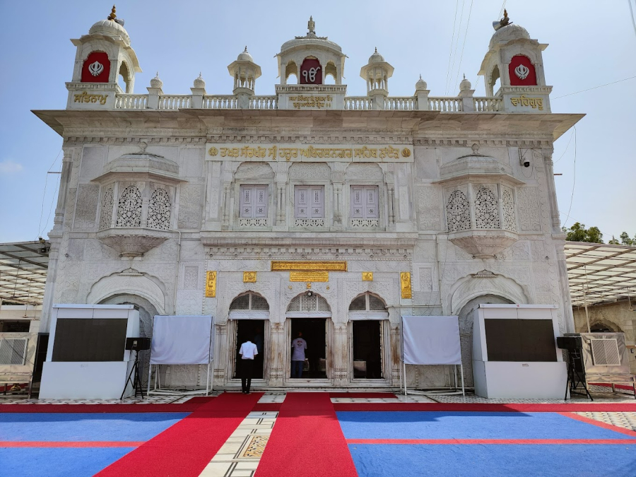
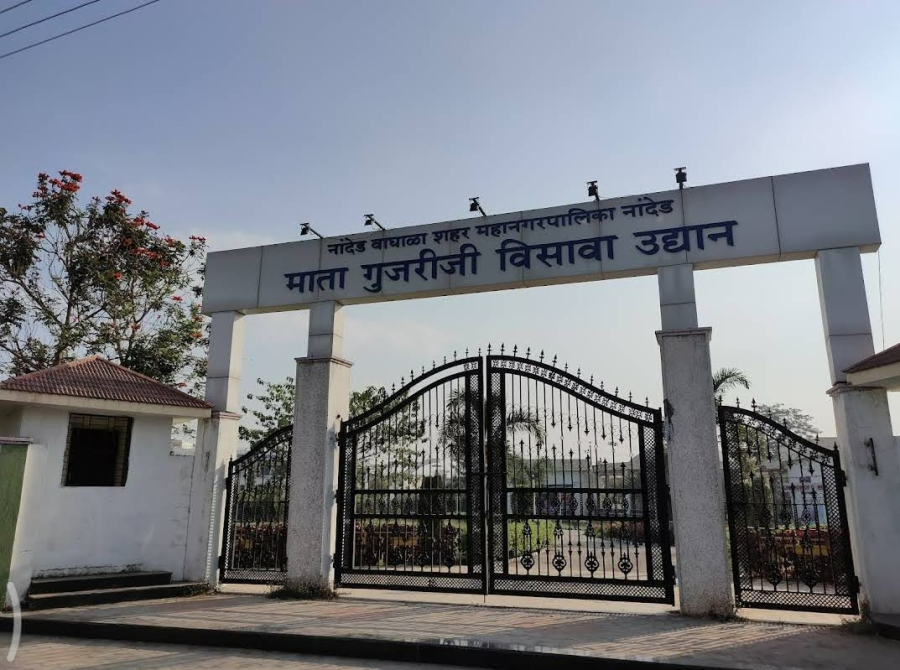
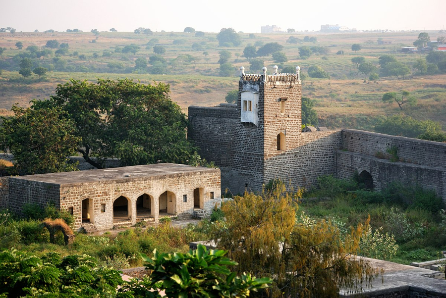
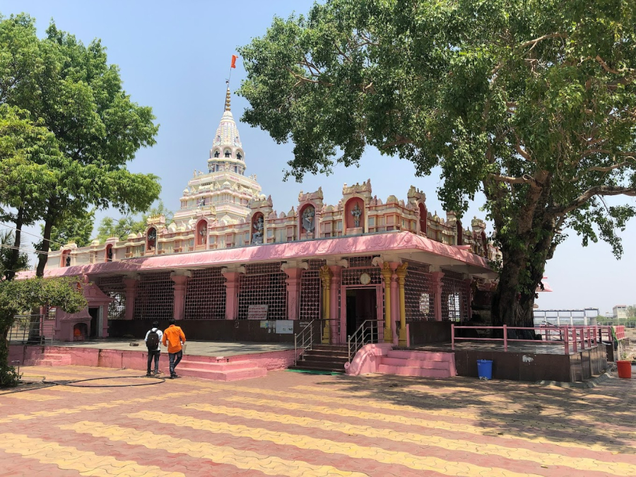
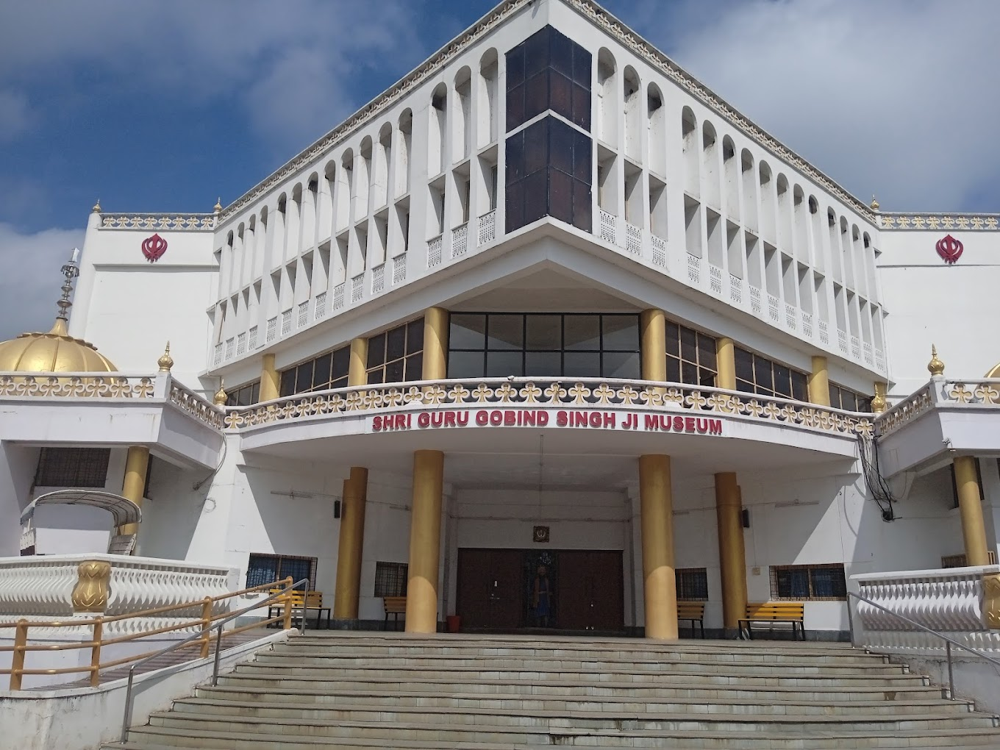

Let's Go and Explore the city of Nanded.
Nanded is located on the banks of river Godavari in west-central India. Nanded district borders Latur district, Parbhani district and Hingoli district to the west and Yavatmal district to the north. The district is bordered by the Nizamabad, Kamareddy, Nirmal and Adilabad districts of Telangana state to the east and Bidar district of Karnataka state to the south.
Kandhar Fort
Kandhar Fort or Kandhar Khilla is a fort located in Kandhar, Nanded district in the state of Maharashtra, India. Its construction attributed to the Rashtrakuta King Krishna III of Malkhed. Kandhar fort is around 40 km from Nanded station, It was built by King Krishna II of Malkhed. Spread across 24 acres and situated seemingly in the middle of nowhere is the Kandhar fort, once the seat of the powerful Rashtrakuta dynasty that ruled over the Deccan between the 6th and 10th centuries CE. In a good condition and boasting some beautiful architectural features, the fort is on the banks of the Manyad river around 55 km from Nanded in Maharashtra.
Takhat Sachkhand Shri Hazur Abchal Nagar Sahib
Hazur Sahib, also known as Takht Sachkhand Sri Hazur Abchalnagar Sahib, is one of the five takhts in Sikhism. The gurdwara was built between 1832 and 1837 by Maharaja Ranjit Singh. It is located on the banks of the Godavari River at the city of Nanded in the state of Maharashtra, India.
This place is 1 among the 5 takhts. Every Sikh pilgrim vows to visit here at least once in a lifetime. Sachkhand means a realm of truth. The temple surrounding, Architecture is awesome.
Mata Gujari ji Visava Garden
Mata Gujari Ji Visava Garden in Nanded is a family-friendly park. The park has trains and small rides, as well as a grassy area where children can play in the evening. There are beautiful grasslands where children can play with their parents in their spare time. There are stone benches throughout the park where people can sit and relax with friends and family while enjoying the peaceful surroundings.
The park provides a basic public restroom facility. Mata Gujari ji Visava Garden is also wheelchair accessible for the elderly and physically disabled. The park provides a variety of affordable recreation opportunities in a clean, safe, and healthy environment.
Nanded Fort
Nanded Fort, also known as Nandgiri Fort is a fort located 4 km on the banks of Godavari river from Nanded city. Nanded is connected by rail, air, and road to major cities in India. The fort is about 3 km from the Nanded Railway Station.
The double fortification had a total of 24 bastions earlier; now only eight bastions are in good condition. The bastions are 18-20 meters in height. The fort has been converted into a garden to attract tourists. There is a water tank constructed in the fort. The fort is accessible in all seasons. It takes about 20 minutes to reach the fort entrance from the main city. There is also another route from Kinwat but it passes through dense jungles. It takes another hour to visit the entire fort.
Kaleshwar Mandir, Vishnupuri
Located in Vishnupuri area on the banks of Godavari river. The views of Vishnupuri dam is beautiful with good water level of reservoir. The temple is beautiful.
This is a nice Siva temple located in Vishnupuri ,a dam constructed on river Godavari .It's around 8 Kms from Nanded city in a secluded place . The good thing is it's situated in a natural , peaceful place with chirping of birds and river flowing beneath , faraway from the hustle and bustle of the city . The darshanas of Lord Siva are wonderful .
Shri Guru Gobind Singh Ji Museum
Large collection of Sikh weaponry, war dresses, paintings & artifacts in ornate surroundings.
It is a great place to visit for the knowledge od sikh history.
Video